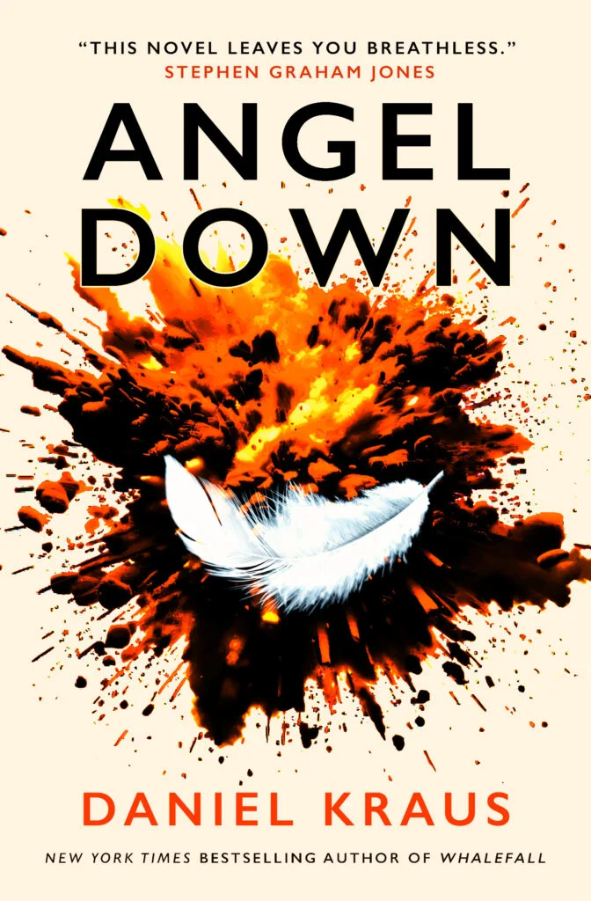

2026 Pulitzer Prize for Fiction: Daniel Kraus Wins for Angel Down
The Pulitzer Board awarded the 2026 fiction prize to Daniel Kraus for Angel Down — a 285-page novel about five American soldiers who find a fallen angel in No Man’s Land. Written in a single continuous sentence. What the win means.

The Pulitzer Board announced the 2026 winners this afternoon, and the fiction prize went to Daniel Kraus for Angel Down, a novel about five American soldiers in the closing months of the First World War who find a fallen angel in No Man’s Land. The book is 285 pages long. It’s also one sentence.
That last point isn’t a gimmick. Kraus has written the entire novel as a single continuous sentence, broken only by paragraph indentations, every paragraph beginning with the word “and”. The Pulitzer citation calls it “a stylistic tour-de-force that blends such genres as allegory, magical realism and science fiction into a cohesive whole, told in a single sentence.” The choice is doing actual literary work, not stunt work. We’ll come back to why.
The win is a surprise on a few fronts and worth thinking about carefully, because what the Pulitzer rewards tells you is something about where American literary fiction’s going.
The shortlist Kraus beat
The 2026 fiction finalists were strong. Kraus was up against a novel built on two competing narratives addressing identity and selfhood, and a story collection exploring transgender consciousness across literary forms. Both finalists came out of the literary establishment. Both fit comfortably inside what the prize has historically rewarded.
Going into the announcement, the prediction lists ran heavily toward Karen Russell’s The Antidote, which had picked up National Book Award and National Book Critics Circle finalist nominations and was the consensus favourite. Tayari Jones, Virginia Evans, and Tiphanie Yanique were all in heavy rotation as contenders. None of them won.
Kraus, who isn’t on most literary establishment radar — his previous bestseller Whalefall was a survival horror novel, and his other credits include co-writing The Shape of Water with Guillermo del Toro — took the prize. This matters because of what it signals. The Pulitzer Board doesn’t usually reach across the genre divide. When it does, the choice tends to make a point. Cormac McCarthy’s The Road won in 2007 and reframed the relationship between literary fiction and post-apocalyptic genre. Donna Tartt’s The Goldfinch won in 2014 and did something similar with the literary thriller. Kraus winning for Angel Down sits in that lineage. The board is saying that formal ambition can come from anywhere on the genre map, and that the boundaries the literary establishment defends are softer than the establishment thinks.
What the single sentence does
The temptation with a one-sentence novel is to read the choice as a Joyce-and-Beckett tribute. Ulysses ends with Molly Bloom’s unpunctuated monologue. Beckett’s The Unnamable runs its closing pages without breath. Bohumil Hrabal’s Dancing Lessons for the Advanced in Age is a single-sentence novel from 1964. Lucy Ellmann’s Ducks, Newburyport is a thousand-page single-sentence novel published in 2019, shortlisted for the Booker. The form has a tradition. Kraus is working inside it.
What separates Angel Down from those predecessors is the relationship between the form and the subject. A novel about war, especially a novel about No Man’s Land between trench lines in 1918, is a novel about being unable to stop. The soldiers can’t stop. The shelling can’t stop. The grammar can’t stop. Every paragraph in the book begins with “and”, which is the conjunction that makes things continue. It’s the word a child uses to extend a sentence past the point where an adult would close it. Kraus is using the technique to enact what the soldiers are experiencing: an event that does not allow the consolation of an ending.
That’s the literary argument for the form. There’s also a craft argument worth noting. A single sentence is the hardest possible structure to sustain across 285 pages. Most novels break tension every ten pages or so by closing a chapter or finishing a scene. The reader gets to breathe. Angel Down doesn’t allow breath. The relentlessness is the experience. The relentlessness is the war. For a craft-side perspective on what compression does at novel length, Why the Best Novels of 2026 Are Under 200 Pages covers the broader formal conversation that Angel Down sits inside. Kraus’s choice is the maximalist version of the same instinct that produces Claire Keegan’s compressed novellas: a refusal to let the reader’s attention slacken.
The book itself
The premise is small. Private Cyril Bagger, a survivor and a swindler, is sent into No Man’s Land with four other soldiers to euthanize a wounded comrade. They don’t find a wounded comrade. They find what appears to be an angel, struck down by artillery fire. The angel may or may not be able to end the war. The five soldiers may or may not be able to suppress their individual greed and jealousy long enough to find out.
That’s the plot. The book isn’t really about the plot. What it’s about is the question of what kind of story can hold the experience of industrial-scale violence. The 20th-century literary tradition has tried straight realism (Remarque, Hemingway, Norman Mailer), comic absurdism (Heller, Vonnegut), and modernist fragmentation (Tim O’Brien, Michael Herr). Each of those approaches captures something real and misses something else. Kraus has decided that what war requires is a form that combines the documentary register of realism with the metaphysical openness of magical realism, and that combination only works if the prose itself never stops.
The angel is the magical-realist element. The single-sentence prose is the formal element. The historical detail of the Meuse-Argonne offensive is the realist element. Holding all three inside one continuous syntactical structure is what makes the book do what it does.
Critics have compared the book to Cormac McCarthy and Clive Barker, which is an unusual pairing but accurate. Angel Down shares McCarthy’s relentless, hypotactic prose rhythm and Barker’s willingness to take the supernatural seriously as an instrument of moral inquiry. The combination is rare in contemporary American fiction. The Pulitzer Board has decided it deserves the prize.
What this signals about prize culture
The 2026 fiction shortlist is the most genre-permeable Pulitzer fiction shortlist in at least a decade. Kraus wins as a horror crossover writer. The two finalists were a formally experimental literary novel and a transgender story collection. None of the three is a conventional realist literary novel of the kind the prize tended to reward through the 2010s.
This continues a pattern visible across multiple 2026 prize cycles. The International Booker shortlist leaned heavily toward formally restless work. The Women’s Prize shortlist included autofiction alongside hybrid memoir-fiction and translated work. The Booker longlist later this summer will likely continue the trend. What the prize boards seem to be agreeing on, without coordinating, is that the conventional literary novel has run out of new things to say. Realist fiction in the workshop tradition is producing competent work but few books that anyone will remember in fifty years.
The novels that the boards reward are the ones doing something with the form that hasn’t been done, or hasn’t been done in a long time. That can mean translation, autofiction, fragmentation, genre-crossing, formal experimentation, or in Kraus’s case all of the above at once. This is good news for writers working outside the standard literary apparatus. It’s challenging news for writers who’ve been trained in workshop realism and assumed the prizes would arrive on schedule. The prize culture has shifted. The work it rewards now is the work that takes formal risks.
Where this fits in 2026 fiction
Kraus’s win belongs in the same conversation as several other major 2026 books. Deborah Levy’s My Year in Paris with Gertrude Stein, reviewed earlier on the site, is a formally restless hybrid novel that refuses to choose between fiction and criticism, and uses biography as a third register without committing to it. Sophie Mackintosh’s Permanence, Madeline Cash’s Lost Lambs, and Jennette McCurdy’s Half His Age all sit somewhere on the spectrum between literary fiction and adjacent traditions, and all are doing real work at the level of form. For the wider context, Literary Fiction in 2026: What the Best New Books Are Actually Doing covers the broader formal conversation. Angel Down belongs to it. The win confirms that the conversation has institutional weight now. It’s not just a few critics noticing that contemporary fiction is changing shape. The prize boards have noticed too.
The other 2026 winners
The fiction prize gets the most attention but the rest of the 2026 letters slate is worth tracking. Yiyun Li won the memoir prize for Things in Nature Merely Grow, an account of losing her younger son to suicide six years after losing her older son the same way. Juliana Spahr won the poetry prize for Ars Poeticas. Jill Lepore won the history prize for We the People, an investigation of why the US Constitution is so difficult to amend. Brian Goldstone won the general nonfiction prize for There Is No Place for Us, a book about working homelessness in America.
The slate as a whole reads as a board paying attention to what’s actually being written rather than what’s expected to be rewarded. That’s worth more than any individual prize.
Buying the book
Angel Down is available from Bookshop.org UK. The UK edition is published by Titan Books and the hardback is 304 pages. Buying through Bookshop.org supports independent bookshops and contributes a small commission to Tumbleweed Words at no extra cost.
Buy Angel Down from Bookshop.org →If you’re interested in the formal tradition that Angel Down belongs to, the Iceberg Theory covers the compression principle that connects Kraus to the modernist line, and Predicting the 2026 Pulitzer Prize for Fiction shows what the literary establishment expected to win, and how that establishment got it wrong in a useful way. The Pulitzer surprise is the kind that tells you the prize is still capable of paying attention to what is going on in contemporary fiction.
This page contains Bookshop.org affiliate links. If you buy through them, Tumbleweed Words earns a small commission at no extra cost to you.